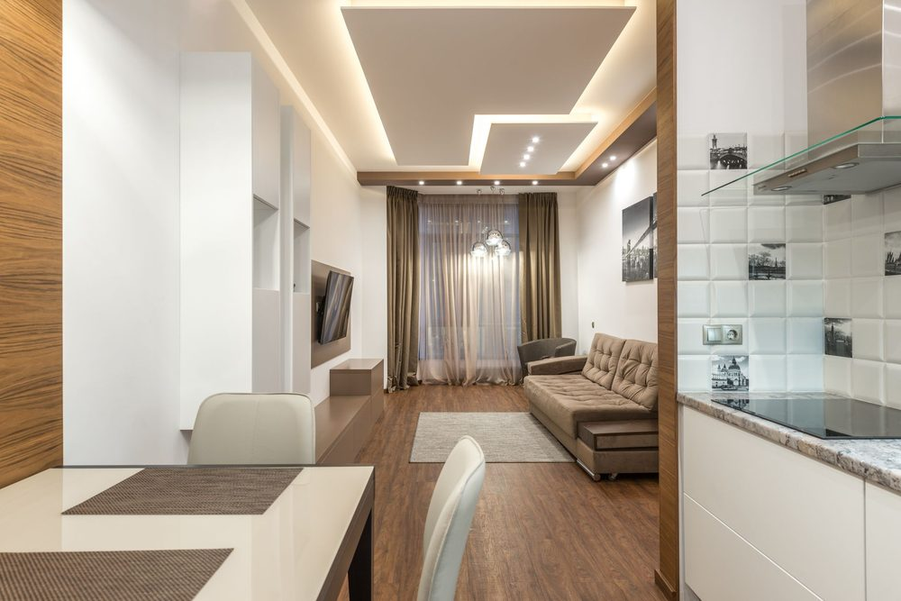

Write a brief that includes the safety limits
In this apartment
In a 1BHK apartment in Pune, Anjali wants a calm living room that still works for her toddler. The city name is an illustration. The safety questions are the same in a US rental: what can tip, what can be pulled, and what can be climbed.
A design brief is useful only if it names both the look you want and the risks you will not accept.
No room arrangement is completely childproof. The recommendations in this book are intended to reduce foreseeable risks, not eliminate them. Children’s abilities change quickly, so caregivers should reassess reach, climbing routes, cords, furniture stability, and equipment access regularly.
Write three sentences for mood, color, and materials. Then write four non-negotiables: the TV must be secured to its support; the furniture must be anchored if it can tip; cords must be protected from pulling, chewing, crushing, and heat; climbing aids near the TV must be removed. Hidden cords are not automatically safe.
Share the brief with anyone who shops, installs, or rearranges the room. A stylish TV area with practical child-safety measures is the goal. A childproof guarantee is not.
Do this
- Write the mood, color, and material sentences.
- List the four non-negotiables: TV support, furniture stability, cords, climbing routes.
- Note renter or owner, wall uncertainty, and whether a fireplace or heat source is present.
Before you move on
- Limitation statement read: no room is completely childproof
- Four risk types named: TV, furniture, cords, reach
- Renter or owner noted